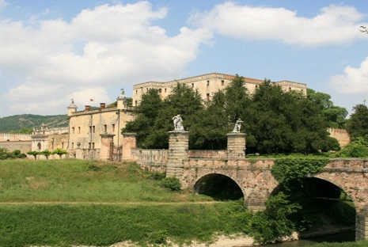

Luoghi d'interesse
Scopri le meraviglie dei colli euganei

Le 7 chiesette
Un viale fiancheggiato da 7 chiesette che porta ad una meravigliosa villa.

Il castello del Catajo
Un palazzo a metà tra la reggia e il forte.